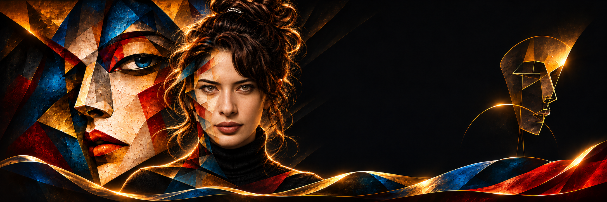
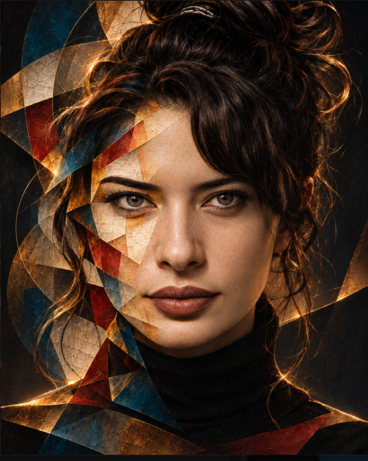
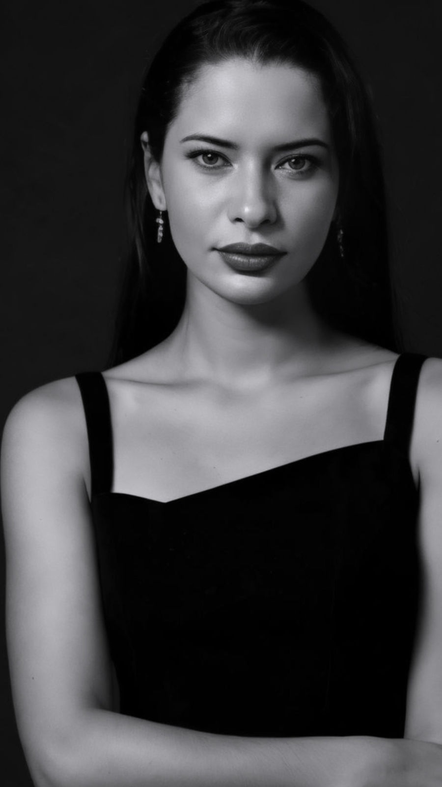

SANGHA
2023 · Yağlı boya

Z E H R A R T
Çağdaş Kübist Sanat
Bir görüntünün ardında başka anlamlar, bir anın ardında başka hikâyeler olduğuna inanıyorum.
Öne çıkan eserler
Atölyeden yeni çıkan, koleksiyonun dikkat çeken eserleri.
Tüm eserleri gör →Sanatsal Yaklaşım
Gördüklerimi parçalarına ayırıyor, farklı açıları ve katmanları yeniden bir araya getiriyorum. Parçalanıyor. Çoğalıyor. Dönüşüyor.
▷ Manifesto’yu keşfetİnsanın iç dünyası, bağ kurma biçimleri ve ruhsal süreçler çevresinde gelişen seçili çalışmalar.
Koleksiyonu incele →Eser arşivi

Sanatçı
Zehra Arıoğlu, 1998 yılında Ankara’da doğdu. Hemşirelik eğitimiyle başlayan mesleki yolculuğu ona insan bedeni, kırılganlık ve iyileşme süreçleriyle doğrudan temas etme imkânı sundu. Yaklaşık beş yıldır profesyonel olarak resim yapan sanatçı, Ankara’da yaşamakta ve üretimlerine burada devam etmektedir.
Biyografiyi okuManifesto
Bazı şeyler tek bir açıdan görülemez. Benim için her şey bir bakış açısıyla başlıyor. Bir görüntünün ardında başka anlamlar, bir anın ardında başka hikâyeler olduğuna inanıyorum.
Bu yüzden gördüklerimi parçalarına ayırıyor, farklı açıları ve katmanları yeniden bir araya getiriyorum. Parçalanıyor. Çoğalıyor. Dönüşüyor.
Resimlerim bu katmanların arasında dolaşıyor; görünenden görünmeyene, bildiğimizden henüz keşfetmediğimize doğru ilerliyor. Ve sonunda, daha önce görmediğim başka bir gerçeklik ortaya çıkıyor.

Biyografi
1998 yılında Ankara’da doğdu. Hemşirelik okulunu bitirerek başladığı mesleki yolculuk, ona insan bedenleriyle, kırılganlıkla ve iyileşme süreçleriyle doğrudan temas etme imkânı sundu.
Astroloji, bilinç ve bilinçaltı alanlarında üç yıl boyunca eğitim aldı. Zaman, sezgi, içsel dönüşüm ve duygusal hafıza kavramları üretimlerine kavramsal bir zemin kazandırdı.
Resim, onun için yalnızca bir anlatım aracı değil; bilinç ile bilinçaltı arasındaki geçiş alanıdır. Her çalışma, hissedilerek tamamlanan açık bir yapı olarak ele alınır.
İletişim
Eserleri yakından incelemek, ölçü ve mekân uyumu hakkında bilgi almak veya sanatçıyla özel görüşme yapmak için iletişime geçebilirsiniz.
Eser hakkında bilgi
Bir eserin hikâyesi, özel gösterim veya koleksiyonunuz için sanatçıya doğrudan ulaşın.
E-posta gönderTelefonla araÖzel gösterim
Bu statik site çerez, takip kodu veya sunucu tarafında form kaydı kullanmaz. E-posta ve telefon bağlantıları cihazınızdaki ilgili uygulamayı açar.